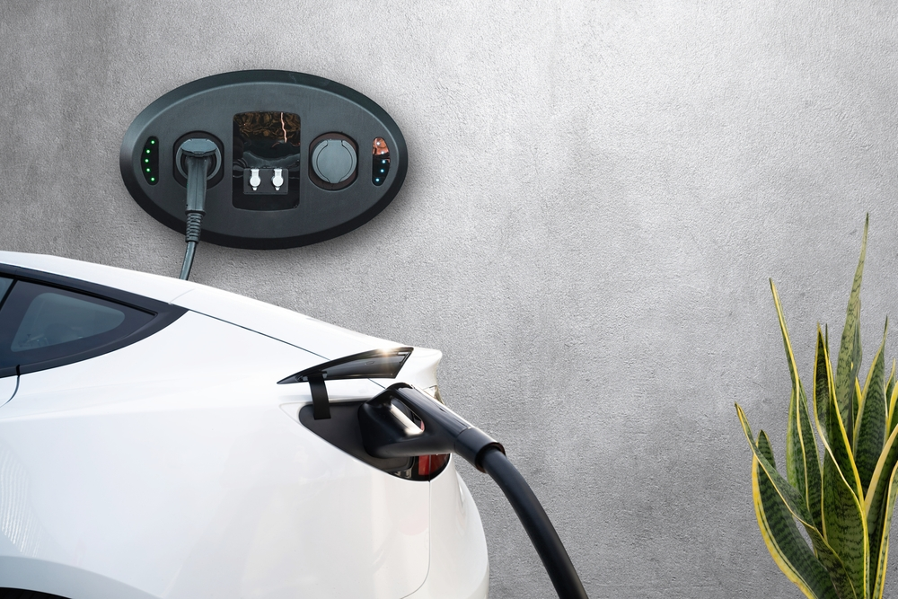

Зарядні станції для електромобілів є ключовим компонентом інфраструктури для підтримки електротранспорту. Наразі в Україні спостерігається зростання кількості зарядних станцій, але їх все ще недостатньо для покриття потреб всіх власників електромобілів.
Зарядка електромобіля вдома є найзручнішим і найбільш економічним способом. Проте далеко не всі власники автомобілів мають можливість встановити власну зарядну станцію через відсутність підходящих умов.
Зарядні станції поділяються на різні типи залежно від потужності та швидкості зарядки. Найпоширеніші з них – це швидкі зарядні станції, що дозволяють зарядити електромобіль за 30-60 хвилин. Однак, для повноцінного розвитку електротранспорту необхідно побудувати ще більше зарядних станцій в кожному регіоні України.
Розвиток мережі зарядних станцій є ключовим для збільшення кількості електромобілів на дорогах України. Державна підтримка та інвестиції з боку приватного сектора можуть значно прискорити цей процес та створити сприятливі умови для поширення електротранспорту.
